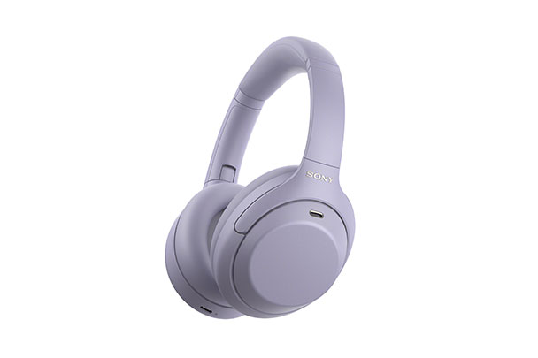

科技產品 T1
Epic 確認新啟動器規劃支援 SteamOS 等 Linux 發行版，並預定十一月恢復 AppImage
發佈時間
Epic Games／Epic Games Launcher Preview Linux 路線
Epic發言人Jake Jones表示新啟動器將以更多Linux發行版為支援目標，並計畫在本月恢復AppImage下載形式。
- 公司具名列出Fedora、SteamOS、Cachy及Omarchy等計畫支援對象，啟動器仍處於Preview。
- 原始採訪指出下載由AppImage改為Debian／Ubuntu的.deb，公司正在測試不同封裝形式。
- 官方11/6版本0.113.0更新紀錄列有磁碟滿時暫停下載等變更，但未把SteamOS列為該版已完成認證。
完整報告收合報告
事件背景與影響
Linux遊戲商店的可用性不只取決於有沒有客戶端，也取決於安裝格式、發行版及遊戲本身的相容性。
事件與發佈依據
GamingOnLinux原始採訪11/6 19:22UTC首次刊出具名公司回應；不是11/8其他媒體重刊日，也不是10/14 Preview首次推出。
收錄紀錄
10/26至11/8十四份日報窄查Epic與SteamOS／AppImage無命中，再核同窗31列產品表未收，採獨立路線更新。
尚待確認
支援路線不等於所有發行版已正式可用，也不代表Fortnite及其反作弊系統已能在Steam Deck運作；AppImage本月恢復是承諾而非已完成下載實測。
相關實體與概念
Epic Games、Jake Jones、SteamOS、Steam Deck、Linux、AppImage、遊戲相容性。
科技產品 T2

Sony台灣Store之WH-1000XM4C官方圖；本次新聞是台灣預購，非九月全球首次發表。 Sony／Sony Store Taiwan
Sony WH-1000XM4C 在台開放預購，官方商店列六千九百元並預計十一月二十日上市
發佈時間
Sony／WH-1000XM4C 台灣市場預購
Sony在台導入WH-1000XM4C，保留可摺疊的1000X系列設計，官方商店本次列預購價新台幣6,900元。
- 官方建議價格9,900元，商店列預購6,900元；媒體報導預購至11/19，商店預計11/20上市。
- 採QN1降噪處理器，支援多點連接與Sound Connect十段等化器，提供黑、鉑金銀及薰衣草色。
- 官方標示約253克、開啟降噪與藍牙時最長27小時；成績仍受音量及設定影響。
完整報告收合報告
事件背景與影響
本地預購、保固與供應時程是台灣消費者的新可用性資訊，和海外發表時間或單純折扣不同。
事件與發佈依據
UDN11/6 11:28報導台灣當日推出，官方Store核對預購及11/20預計上市；九月全球發布與本次地方可用性分開。
收錄紀錄
十四份日報查WH1000XM4C無命中，同窗31列產品表亦未收本次台灣預購，並非把全球舊機重新當首發。
尚待確認
Cool3c寫6,990元，官方商店與其他台灣媒體寫6,900元，本文以官方為準但保留差異。不同Store網址曾顯示缺貨／上市通知，不保證每色可訂；預計上市不等於已出貨，本報未試聽或測續航。
相關實體與概念
Sony、WH-1000XM4C、台灣預購、QN1、主動降噪、Sound Connect。
全球焦點 1
續報｜利雅德遭飛彈攻擊後 Aramco 辦公大樓受損，沙國稱攔截碎片造成損害、無人傷亡
發佈時間
沙國稱攔截來襲飛彈後，碎片使利雅德金融區Aramco行政大樓受損，未通報死傷。
- Reuters目擊者看到大樓多層窗戶破損；能源部形容損害有限。
- 沙國聯軍指控胡塞發射飛彈，胡塞稍後也宣稱攻擊金融區等目標。
- 本次所涉為行政辦公樓，報導未確認煉油廠或出口設施因此停產。
完整報告收合報告
事件背景與影響
衝突波及首都商業區，但辦公樓損壞不能直接推定原油產能中斷。
事件與發佈依據
Reuters11/8 09:09GMT首次報導當日上午新襲擊及能源部聲明，非更新日期刷新。
收錄紀錄
11/8已收葉門村莊空襲與對沙國的指控；今日新增利雅德受襲及Aramco辦公樓實際損害，雙方責任說法仍分開。
尚待確認
不同時間的攔截數字及命中描述不一；本文不以交戰方宣稱推定完整戰果，也不把目擊損壞自動等同直接命中。
相關實體與概念
沙烏地阿拉伯、利雅德、Saudi Aramco、胡塞、金融區、區域衝突。
全球焦點 2
札波羅熱核電廠一度失去外部電源，IAEA 稱數小時後恢復供電，斷線原因仍不明
發佈時間
俄控札波羅熱核電廠在外部線路中斷後改用柴油發電機維持冷卻，國際原子能總署隨後確認外部電力恢復。
- Ferosplavna線路斷開，俄方管理單位稱自動保護系統啟動；IAEA表示原因與斷點位置尚不明。
- IAEA稱這是全面戰爭以來第27次外部電源全失事件。
- 管理單位稱輻射正常，另一主要外部線路仍不可用；並非核電廠重新發電。
完整報告收合報告
事件背景與影響
停機核電廠仍需冷卻電源；供電恢復降低即時壓力，但不代表長期安全問題已解決。
事件與發佈依據
11/8上午公布失電，Reuters19:54GMT已報IAEA確認恢復＝台北11/9 03:54，兩個節點均在窗內；保留事件日期而不將晚間恢復套上早版時間。
收錄紀錄
十四份日報未收本次核電廠失電及恢復，與昨日基輔橋梁及能源攻擊不同設施事件。
尚待確認
不能由附近戰況直接判定誰造成斷線，輻射說法亦須保留發布主體；不沿用早上失電標題而漏掉截點前恢復消息。
相關實體與概念
IAEA、札波羅熱核電廠、Ferosplavna、柴油備援、核燃料冷卻。
全球焦點 3
法國外長宣布歐洲代表將參與阿布達比烏克蘭會談，法方人選與具體角色尚未公布
發佈時間
Jean-Noël Barrot表示法國與其他歐洲代表將參與下週在阿布達比舉行的烏克蘭談判。
- Barrot明言法國會在場，但尚不能透露由誰代表。
- 美國先前安排烏克蘭及俄羅斯代表於11/10至11日會面。
- 議程涉及終戰、戰後安全安排與降溫，具體成果仍待會談。
完整報告收合報告
事件背景與影響
參與者範圍影響歐洲安全安排，但出席承諾並不是停火協議已達成。
事件與發佈依據
Reuters11/8 12:06:55UTC稿報導Barrot當日RTL訪問；11/10至11日會談仍是未來安排。
收錄紀錄
十四份日報無本次法國確認參與安排，既有戰爭報導不等同本次席位公告。
尚待確認
歐洲代表不等於歐盟已確定單一代表與正式授權；本報不將會議預定時間當成實際開會或協議生效。
相關實體與概念
Jean-Noël Barrot、法國、歐洲、阿布達比、烏克蘭、俄羅斯、美國。
全球焦點 4
續報｜以色列總統正式交付 Eisenkot 組閣任務，聯盟談判仍未完成
發佈時間
總統Herzog正式讓Gadi Eisenkot優先嘗試組成政府，後者仍須取得國會多數支持。
- 一般期限28天，總統可給兩週延長。
- 聯盟談判仍有分歧，正式授權並未保證Eisenkot成為總理。
- 新政府組成前，Netanyahu及其內閣仍以看守身分留任。
完整報告收合報告
事件背景與影響
選後程序從指定人選進入有期限的組閣階段，正式任務與最終執政權仍不同。
事件與發佈依據
AP記錄11/8晚間官邸正式儀式；頁面早期發布時間不當作晚間授權發生時刻。
收錄紀錄
11/8已收總統選定人選及邀請；今日新增正式交付任務，不是重刊昨日意向，也非新政府已就任。
尚待確認
各黨的談判立場不是已簽協議；未把支持交付任務解讀成所有議員必支持同一內閣。
相關實體與概念
Isaac Herzog、Gadi Eisenkot、Benjamin Netanyahu、Knesset、聯合政府。
全球焦點 5
埃及兩列客運火車在開羅以南追撞，至少七人死亡，傷者數字仍有更新差異
發佈時間
一列往Fayoum的列車撞上往Aswan列車尾部，部分車廂出軌，當局展開救援及事故調查。
- 事件在Giza省al-Ayyat一帶，至少七人死亡。
- Reuters引衛生部報112傷；AP後續報至少125傷，本文不擅自平均或相加。
- 總統要求迅速調查，清理殘骸不等於全線已恢復正常。
完整報告收合報告
事件背景與影響
救援、鐵路復駛及原因鑑定須分開追蹤，不能在調查完成前推定單一責任。
事件與發佈依據
AP11/8 14:04:43UTC首篇報導當日碰撞；截點前後續稿報七死，傷者Reuters112與AP125並存。
收錄紀錄
十四份日報未收此次al-Ayyat列車追撞，與舊鐵路事故不同。
尚待確認
早期四死八十八傷與較新數字不同；AP及Reuters對距離與傷者口徑亦有差異，事故技術原因仍待調查。
相關實體與概念
埃及、Giza、al-Ayyat、Fayoum、Aswan、鐵路安全。
全球焦點 6
塞內加爾公布近海移民船難至少二十一死，僅確認救起一人並持續搜救
發佈時間
塞內加爾內政部稱一艘移民船在Kébémer外海沉沒，截至週六晚發現21具遺體及一名生還者。
- 當局11/8公布進度，搜救仍在尋找其他可能生還者。
- 官方沒有公布船上總人數。
- 西非大西洋航線涉及前往加那利群島的高風險移動，但本船目的地未完整確認。
完整報告收合報告
事件背景與影響
總乘員不明使失蹤規模仍難判定，死亡與獲救人數不足以直接推算最終傷亡。
事件與發佈依據
Reuters11/8 07:09EST＝12:09UTC首次報導內政部當日聲明，披露前晚搜救狀況；不把船難日期與官方披露日混同。
收錄紀錄
十四份日報未收本次Kébémer船難；達卡青年奧運為不同事件。
尚待確認
目前僅一名獲救不代表其餘乘員全部已確認死亡；沉沒原因與責任仍未公布。
相關實體與概念
塞內加爾、Kébémer、內政部、海上搜救、不規則移民。
全球焦點 7
台共黨主席林德旺涉接受中共指示與資助參選里長，法院裁定羈押禁見
發佈時間
台南及新竹檢方偵辦境外介選案，林德旺遭羈押禁見，另一被告陳震宙獲五萬元交保並限制住居。
- 檢方指林涉接受中共指示與資助參選，並指示陳參選另一里長職位。
- 檢方另稱有人招攬選民赴中國接受招待，涉嫌藉此賄選。
- 法院對兩人採不同處分，其餘到案人員於偵查中請回。
完整報告收合報告
事件背景與影響
案件涉及選舉資金與境外指示的指控，偵查及羈押處分不等同法院已判有罪。
事件與發佈依據
中央社11/8 11:25報導南檢當日新聞稿；搜索11/6、聲押11/7與本次首次公開披露分開。
收錄紀錄
十四份日報未收本案公開披露，不將其他選舉或舊案混為同一事件。
尚待確認
以上犯罪情節是檢方指控，尚待司法審理；本報保留無罪推定，不將羈押當作定罪或沿用其他年度案件結果。
相關實體與概念
林德旺、陳震宙、台南地檢署、新竹地檢署、里長選舉、境外介選。
全球焦點 8
續報｜南非地方選舉近完整開票顯示 ANC 得票約三成一，多個城市將進入聯盟協商
發佈時間
ANC在地方選舉約得31%，仍為總得票最大黨，但與民主聯盟差距縮小，多地無政黨單獨過半。
- Reuters在99%開票時報ANC31%、DA25%、MK約10%。
- 約翰尼斯堡等城市沒有單一政黨過半，須協商多數聯盟。
- AP後續以官方結果報ANC約31%、DA約25%，與早期近完整數字相近。
完整報告收合報告
事件背景與影響
全國得票比例不直接決定每座城市由誰執政，地方聯盟談判將影響公共服務治理。
事件與發佈依據
Reuters11/8 03:45EST＝08:45UTC報導99%開票；不把11/4投票本身重刊為今日事件。
收錄紀錄
11/5已收地方政府投票；今日新增接近完整的得票分布及地方組閣局面。
尚待確認
這是地方選舉，不能寫成總統已更替或國會重新分配；全國加總與個別議會席次需分開解讀。
相關實體與概念
南非、ANC、Democratic Alliance、MK、地方議會、聯盟政府。
全球焦點 9
蘇丹軍方再拘留遭 ICC 通緝的 Ahmed Haroun，尚未宣布是否移交國際法院
發佈時間
蘇丹前執政黨官員及辯護律師表示軍方再度拘留Haroun，但拘留理由、地點與下落說法仍有出入。
- Haroun曾任Bashir時期高官，遭ICC就達佛戰爭罪及危害人類罪指控通緝；他否認指控。
- Reuters引兩名黨內官員確認被拘，軍方當時未立即回應。
- AP律師先稱Kassala、後改稱Omdurman，實際拘留位置及下落仍待核實。
完整報告收合報告
事件背景與影響
國內拘留不等於國際司法移交，是否回應達佛受害者的問責要求仍待觀察。
事件與發佈依據
Reuters11/8 07:07EST＝12:07UTC報導黨內官員確認當日拘捕；不是多年通緝令重新發布。
收錄紀錄
十四份日報無本次Haroun再拘留，採新執法事件。
尚待確認
尚無移交ICC的確認；Reuters稿另以genocide概括指控，本文不直接當其個人罪名，保留較精確的戰爭罪與危害人類罪表述。
相關實體與概念
Ahmed Haroun、蘇丹軍方、National Congress Party、ICC、達佛、司法問責。
全球焦點 10
阿姆斯特丹再現大型紅線遊行，示威者要求荷蘭對以色列採取更強措施
發佈時間
大批民眾穿紅衣上街，要求政府就加薩局勢施加更大外交及經濟壓力。
- 主辦方要求加強貿易制裁、停止對以武器銷售等措施。
- 國際特赦荷蘭分部稱超過二十萬人參加；AP以數萬人描述，屬不同來源估計。
- 政府主張已持續施壓，示威者則認為仍不足，兩者立場不同。
完整報告收合報告
事件背景與影響
民間動員增加政府回應壓力，但遊行訴求不等於新制裁或武器禁運已通過。
事件與發佈依據
AP11/8 15:04:09UTC報導當日實際遊行，不以原先活動預告占名額。
收錄紀錄
十四份日報的阿姆斯特丹機場或資料中心抗議是不同事件，未收本次紅線遊行。
尚待確認
人數未獨立逐一核實；對genocide的法律及政治定性仍有爭議，不把活動主張寫成法院已裁定。
相關實體與概念
Amsterdam、Red Line、國際特赦組織、荷蘭政府、加薩、以色列。
研究備註
時間、來源與後續追蹤
研究截點 2026-11-09 07:56:03（Asia/Taipei）
研究時間與範圍
研究截點：2026-11-09 07:56:03（Asia/Taipei）。全球新聞：2026-11-08 07:56:03 至 2026-11-09 07:56:03（Asia/Taipei）。科技產品：2026-10-26 07:56:03 至 2026-11-09 07:56:03（Asia/Taipei）。